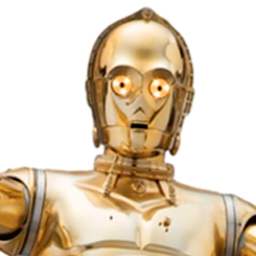
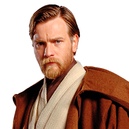

Luke Skywalker
Luke Skywalker fue un legendario héroe de guerra y Jedi que fundó la Nueva Orden Jedi. Era el hijo del Caballero Jedi Anakin Skywalker y la senadora Padmé Amidala de Naboo, además hermano mellizo de Leia Organa. Se unió a la Alianza para Restaurar la República y su más grande hazaña fue destruir la primera Estrella de la Muerte. También fue responsable de influenciar a Darth Vader, el Señor Sith que fue su padre, para que matara al Emperador Palpatine, iniciando el camino para la caída del Imperio Galáctico y la formación de la Nueva República.
Leia Organa
Leia Organa, una mujer humana sensible a la Fuerza, fue una princesa de Alderaan, miembro del Senado Imperial, líder de la Alianza para Restaurar la República, miembro del Senado Galáctico y general de la Resistencia. Nacida junto a su hermano gemelo, Luke Skywalker en el año 19 ABY como Leia Amidala Skywalker, fue hija del Caballero Jedi Anakin Skywalker y de la Senadora Padmé Amidala de Naboo. Como resultado de la caída de su padre hacia el lado oscuro de la Fuerza, los hijos de Skywalker se separaron y Leia se convirtió en la hija adoptiva del Senador Bail Organa y su esposa, la Reina Breha Organa, que cambió su nombre a la Princesa Leia Organa.
Anakin Skywalker
Anakin Skywalker, un hombre humano sensible a la Fuerza, fue un Caballero Jedi de la República Galáctica y el Elegido de la Fuerza. Durante las Guerras Clon, sus logros como comandante en el campo de batalla le valieron el apodo del Héroe Sin Miedo. Después de pasar al lado oscuro de la Fuerza, se hizo conocido como Darth Vader, un Señor Oscuro de los Sith y aprendiz del Emperador Darth Sidious. Como Lord Sith, Vader se volvió contra sus antiguos camaradas y dió caza a los Jedi sobrevivientes hasta su casi extinción.
Padmé Amidala
Padmé Amidala Naberrie, comúnmente conocida como Padmé Amidala fue una humana política que se convirtió en una de las principales voces para la paz y la diplomacia durante los últimos días de la República Galáctica. Ella saltó a la prominencia galáctica cuando la Federación de Comercio invadió y ocupó su planeta natal de Naboo, pasó a servir como una destacada miembro del Senado Galáctico durante la Guerra de los Clones, y se convirtió en la madre de la legendaria Princesa y General Leia Organa y el Maestro Jedi Luke Skywalker.
Han Solo

Han Solo, anteriormente conocido como Han antes de que un Oficial de Reclutamiento Imperial le diera el apellido Solo, era un hombre humano contrabandista que se convirtió en un líder en la Alianza para Restaurar la República y una figura instrumental en la derrota del Imperio Galáctico durante la Guerra Civil Galáctica. Él procedía de Corellia y se convirtió en un contrabandista al servicio de Jabba el Hutt, incluso completando el Corredor de Kessel en menos de trece parsecs con su preciada nave, el Halcón Milenario. Era el yerno del Caballero Jedi caído Anakin Skywalker y la Senadora Padmé Amidala, esposo de la Princesa Leia Organa, cuñado del Maestro Jedi Luke Skywalker, padre de Ben Solo, rivales y amigos cercanos de su contrabandista Lando Calrissian y mejores amigos del Wookie Chewbacca, su copiloto de confianza que juró una deuda de vida con el contrabandista corelliano.
C-3PO

C-3PO, a veces deletreado Cetrespeó y referido a menudo simplemente como Trespeó, era un droide de protocolo unidad 3PO diseñado para interactuar con seres orgánicos, programado principalmente para la etiqueta y el protocolo. Hablaba con fluidez más de siete millones de formas de comunicación, y desarrolló una personalidad exigente y propensa a las preocupaciones a lo largo de sus muchas décadas de operación.
R2-D2

R2-D2, pronunciado Artoo-Deetoo/Erredós-Dedós y a menudo referido como R2 (Artoo/Erredós), fue un droide astromecánico serie R2 manufacturado por Industrias Automaton con programación masculina. Un ingenioso y valiente droide, R2-D2 sirvió a una multitud de maestros a lo largo de su vida. R2 nunca recibió un borrado completo de memoria ni recibió programación nueva, lo que resultó en su actitud aventurera e independiente. A menudo viéndose implicado en momento vitales de la historia galáctica, su valentía e ingenio salvaron a la galaxia repetidas veces.
Lando Calrissian
Landonis Balthazar Calrissian, comúnmente conocido simplemente como Lando Calrissian, fue un hombre humano contrabandista, apostador y jugador de cartas que se convirtió en el Barón Administrador de Ciudad Nube y, más tarde, en un general de la Alianza Rebelde. Fue el dueño del Halcón Milenario antes de perderlo ante Han Solo en un juego de sabacc en Numidian Prime. Después de perder al Halcón, Calrissian puso fin a sus días como contrabandista y se convirtió en empresario, estableciendo una pequeña operación minera en el planeta Lothal antes de convertirse en el líder de Ciudad Nube en los cielos del planeta Bespin.
Obi-Wan Kenobi

Obi-Wan Kenobi fue un hombre humano sensible a la Fuerza y un legendario Maestro Jedi y miembro del Alto Consejo Jedi durante la Caída de la República. Durante la Era del Imperio, empleó el alias de Ben Kenobi para esconderse del régimen que condujo a los Jedi a su casi absoluta extinción tras las Guerras Clon. Un hombre noble conocido por sus habilidades con la Fuerza, Kenobi entrenó a Anakin Skywalker como su Padawan, sirvió como General Jedi en el Gran Ejército de la República, y se convirtió en un mentor para Luke Skywalker antes de su muerte en el 0 ABY.
Yoda
Yoda fue un miembro masculino de una especie misteriosa. Era un reverenciado Maestro Jedi que sirvió como Gran Maestro de la Orden Jedi en los últimos días de la República Galáctica. Era famoso dentro de la Orden por su sabiduría, poderes de la Fuerza y combate con sables de luz, y vivió durante casi 900 años. Su tiempo durante los últimos días de la Orden Jedi y más allá lo convirtió en una figura consecuente en la historia galáctica.
Darth Sidious
Darth Sidious, nacido Sheev Palpatine y también conocido simplemente como el Emperador, fue un hombre humano Señor Oscuro de los Sith y Emperador del Imperio Galáctico, que gobernó desde el 19 ABY hasta el 4 DBY. Ascendiendo al poder en el Senado de la República como senador de Naboo, el Lord Sith en secreto conservó dos identidades, Sidious y Palpatine, usando ambas para avanzar en su carrera política. Orquestando la caída de la República Galáctica y de la Orden Jedi a través de las Guerras Clon, y luego estableciendo su reinado sobre la galaxia que duró hasta su muerte en la Batalla de Endor. Sin embargo, el lado oscuro de la Fuerza dio lugar a poderes que permitieron al Emperador regresar de la tumba.
Rey Skywalker
Rey Skywalker, una mujer humana sensible a la Fuerza, fue una Jedi que luchó por la Resistencia contra la Primera Orden durante la Era de la Nueva República. Aunque nació como Rey Palpatine, no era consciente de su linaje como nieta del Emperador Sheev Palpatine y se refirió a sí misma simplemente como Rey, creyendo que no era nadie. Endurecida por los duros desiertos de Jakku, Rey aprendió a sobrevivir como carroñera, convirtiéndose en una hábil mecánica, piloto y combatiente en el proceso. Después de descubrir su conexión latente con la Fuerza, Rey se esforzó por aprender el camino de los Jedi mientras intentaba entender su vínculo con el Líder Supremo Kylo Ren.
Finn
«Finn» fue el apodo de FN-2187 («Ocho-Siete»), un soldado de asalto humano sensible a la Fuerza que sirvió a la Primera Orden hasta su huida y posterior deserción a la Resistencia durante la Guerra Primera Orden-Resistencia. Aunque entrenado desde el nacimiento para ser un soldado leal y obediente, la conciencia de FN-2187 entró en conflicto con los métodos de la Primera Orden. Durante un tiempo no estuvo dispuesto a apoyar a la Resistencia, con la esperanza de escapar del conflicto galáctico en lugar de luchar por una causa que creía estaba condenada al fracaso. A medida que la galaxia se consumía por la guerra, el soldado renegado se vio finalmente obligado a decidir dónde estaban sus verdaderas lealtades.
Poe Dameron
Poe Dameron fue un piloto humano que sirvió como comandante en la Nueva República y, más tarde, la Resistencia durante su conflicto con la Primera Orden. Hijo de la Teniente Shara Bey y del Sargento Kes Dameron de la Alianza para Restaurar la República, Dameron siguió los pasos de su madre y se convirtió en piloto al servicio de la Flota de Defensa de la Nueva República como comandante del Escuadrón Estoque, pero se desilusionó con la inacción de la República frente a las violaciones del Concordato Galáctico por parte de la Primera Orden. Dameron desertó a la Resistencia, donde se convirtió en uno de los operativos más confiables de la General Leia Organa.
Ben Solo
Ben Solo fue un hombre humano sensible a la Fuerza que, después de caer al lado oscuro de la Fuerza, eventualmente renunció a su alter ego Kylo Ren y fue redimido. Siendo maestro de los Caballeros de Ren, conquistó gran parte de la galaxia durante su reinado como Líder Supremo de la Primera Orden. La Fuerza era intensa en Ren; además de su entrenamiento Jedi y su conocimiento del saber arcano del lado oscuro, el linaje de los Jedi y Sith más poderosos fluía por sus venas. Fue la encarnación del conflicto debido a su inmersión en las enseñanzas de ambos lados, pero fue a través de la discordia que obtuvo el poder, canalizando la ira en poder. Finalmente, Ren estaba decidido a extinguir el lado luminoso dentro de sí mismo y destruir los últimos rastros de la Orden Jedi, cumpliendo el legado de su abuelo, el Lord Sith Darth Vader.
Boba Fett
Boba Fett fue un cazarrecompensas humano, y el clon del infame cazarrecompensas Jango Fett. Boba fue creado por los clonadores de Kamino y era físicamente idéntico a los soldados clon creados para el Gran Ejército de la República, aunque Boba fue inalterado y no creció aceleradamente como los demás clones. Criado como el hijo de Jango, Boba aprendió las habilidades de combate necesarias para algún día convertirse en cazarrecompensas por derecho propio.
Din Djarin
Din Djarin, comúnmente conocido como «el Mandaloriano» o «Mando» para abreviar, fue un hombre humano mandaloriano que trabajó como cazarrecompensas durante la Era de la Nueva República. Con su armadura mandaloriana y distintivo casco de beskar, Djarin estaba bien equipado y era enigmático—un extranjero cuyo pasado está rodeado de misterio para los demás. Huérfano durante la Era de la República y criado como huérfano por los Hijos de la Guardia, fue entrenado para convertirse en un guerrero mandaloriano y eventualmente se unió a la Tribu, que operaba en Nevarro pero en secreto era parte del culto de los Hijos de la Guardia. Djarin se convirtió en un hombre curtido en combate, de pocas palabras, y en un cazador formidable en una galaxia cada vez más peligrosa.